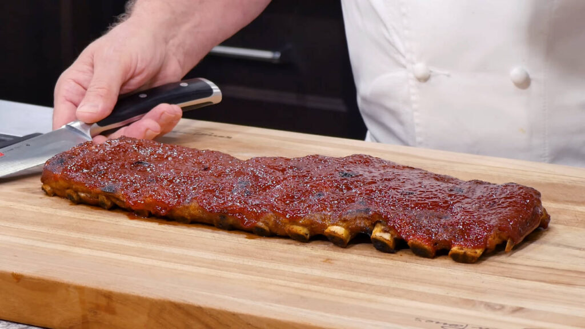

DOCTYPE html>
Odin Recipes - Pork Ribs
Go Back - Home
Pork Ribs Recipe
Ingredients for the Dry Rub
1 tablespoon Onion powder
¼ teaspoon Ground Oregano
½ teaspoon Black Pepper freshly ground
Cooking Instructions
Mix all ingredients together.
Rub the dry rub on both sides of your ribs. If you have the time, lay the ribs on a rack on a cookie sheet and place them uncovered in the fridge for 3 hours to 3 days. (If you are in a hurry, put them in the oven immediately).
Preheat Oven to 275ºF / 135ºC
Wrap the ribs with aluminum foil and place them in the oven for about 2 ½ hours.
Prepare the BBQ Sauce:
Mix all the ingredients and adjust the seasoning to your liking.
Finish the Ribs:
Preheat Oven to 450ºF / 230ºC
Take the ribs out of the aluminum foil and place them on a cookie sheet. Cover them with the BBQ sauce and return to the oven for another 15 minutes. ENJOY AND BON APPETIT!
